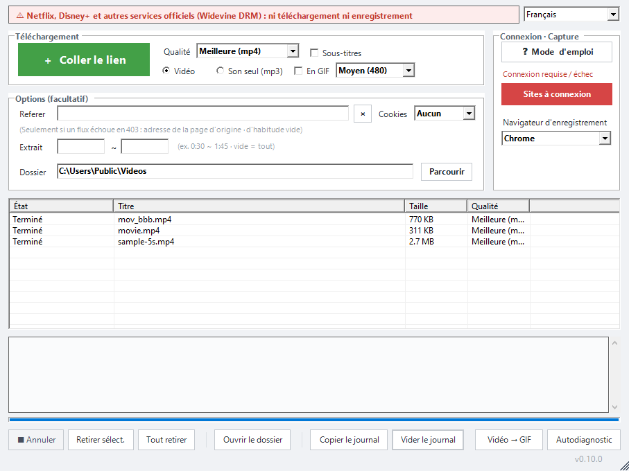

Téléchargez n’importe quelle vidéo, aussi sur PC !!
Collez le lien de la vidéo et téléchargez‑la facilement.
Windows 10/11 · gratuit · sans installation
📖 Comment l’utiliser ↓ 📱 Voir l’appli Android →

Comment ça marche
Le programme existe en 10 langues : choisissez la vôtre dans la case en haut à droite.
- Collez le lien — Copiez l’adresse de la page vidéo et cliquez sur [＋ Coller le lien]. Plusieurs ? Une adresse par ligne. Vous pouvez aussi glisser l’adresse dans la fenêtre.
- Choisissez la qualité, c’est parti — Choisissez la qualité et « vidéo » ou « audio seul (mp3) » : le téléchargement démarre tout seul. [Ouvrir le dossier] affiche vos fichiers.
- Si le lien ne marche pas — Cliquez sur [Sites à connexion]. Dans le navigateur qui s’ouvre, connectez‑vous si besoin et lancez la vidéo, puis cliquez sur [Capturer le flux] : le vrai fichier est téléchargé.
- Toujours rien ? Enregistrez — Cliquez sur [● Enregistrer] puis, à la fin, sur [■ Arrêter et sauver]. Cela dure le temps de la vidéo, enregistrée en mp4.
- Une partie seulement : saisissez une plage comme 0:30 ~ 1:45 (vide = toute la vidéo).
- Sous‑titres : cochez la case pour enregistrer aussi les sous‑titres (.srt) s’il y en a.
- Playlists : collez un lien de playlist et choisissez « tout » ou « cette vidéo seulement ».
- Élément en échec : clic droit dans la liste → [Retélécharger].
- Arrêter un téléchargement : [■ Annuler].
Fonctions
Collez un lien
Pour la plupart des sites vidéo populaires, le lien suffit.
Récupérer le flux
Si le lien ne marche pas, ouvrez la page dans le navigateur, lancez la vidéo et cliquez sur « Récupérer le flux » : le vrai fichier est téléchargé.
Enregistrement d’écran
Si le flux ne peut pas être récupéré, enregistrez la vidéo pendant la lecture. Les vidéos protégées contre la copie des services payants ne peuvent pas être enregistrées.
Rapide et raisonnable
Les gros fichiers sont téléchargés en plusieurs parties, avec peu de connexions pour ne pas surcharger le site.
Portable
Décompressez et lancez. Les réglages restent dans le dossier du programme.
Installation
- Téléchargez le zip avec le bouton ci‑dessus.
- Clic droit sur le zip → Propriétés → cochez Débloquer → OK.
- Décompressez où vous voulez et double‑cliquez sur le fichier .vbs du dossier.
Si la protection Windows (SmartScreen) s’affiche, cliquez sur Informations complémentaires → Exécuter quand même.
Soutenir just downloader
just downloader est gratuit. S’il vous a fait gagner du temps, un petit soutien aide la prochaine mise à jour.